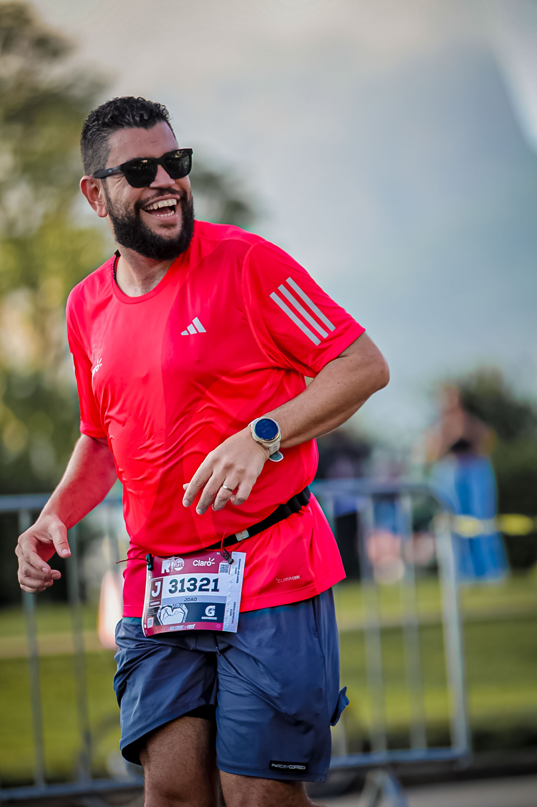

01
Publicidade
- Alcance mensal: 4.000+ contas · engajamento 6–15%
- Reels, Stories & vídeos no TikTok
- Relatório pós-campanha



Dados atualizados em 31/07/2026 · últimos 30 dias
21K · Corrida de rua · Rio de Janeiro, RJ
5K · Corrida de rua · Copacabana, Rio de Janeiro, RJ
10K · Corrida de rua · Rio de Janeiro, RJ
21K · Corrida de rua · Posto 12, Recreio dos Bandeirantes, Rio de Janeiro, RJ
10K · Corrida de rua · Rio de Janeiro, RJ
Próximas provas a caminho. Quer ativar sua marca em uma delas — camiseta, conteúdo da prova ou bastidores do treino? Vamos conversar.
Quero patrocinarOs próximos desafios, resultados e reflexões — direto pra você. Sem spam, cancela quando quiser.